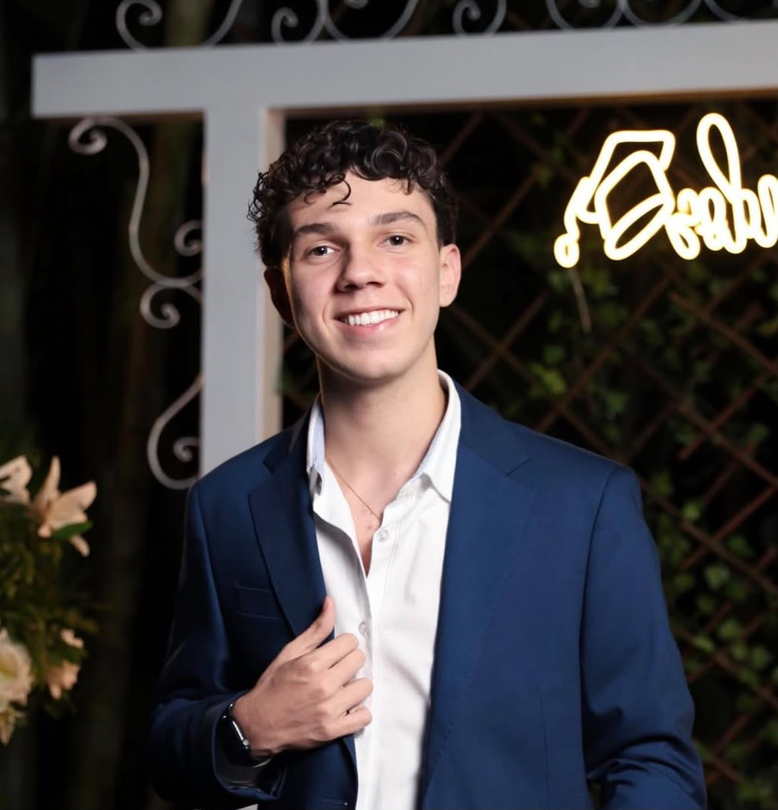

Ciência da Computação
PUCPR · Curitiba
Estudo Ciência da Computação e transformo o que aprendo em jogos, letras e experiências.
Explore meus projetosCoisas que nascem
do que eu aprendo.

De Édipo Rei a um mundo para explorar. Literatura, investigação e escolhas em um jogo 2D.
Minha caligrafia virou uma fonte de verdade.
Conectivos, tradução e tabelas-verdade em um laboratório interativo.
Na robótica, uma ideia precisa funcionar no mundo real. Meu percurso no TechBot / My Robot School reúne aproximadamente 45 projetos de automação e IoT.
Explore fotografia, tipografia e robótica ↗Experimentar. Montar.
Programar. Tentar de novo.
Fotografar pessoas é uma das formas que encontrei de explorar expressão, composição e cor.
MATO GROSSO DO SUL → CURITIBA

Tenho 17 anos e me mudei do Mato Grosso do Sul para Curitiba para estudar Ciência da Computação na PUCPR.
Gosto de aproximar tecnologia, design e comunicação. Minha formação passa por design gráfico e robótica; fotografia e edição também fazem parte dos meus interesses.
Desde criança, aprendo sobre vendas e administração acompanhando meus pais. Recentemente, entrei no Centro Acadêmico de Ciência da Computação e estou começando essa participação.
Tenho familiaridade com iOS e macOS e um forte interesse pelo ecossistema Apple. O que conecta esses interesses é a vontade de entender como as coisas funcionam — e criar com o que aprendo.
Quero desenvolver meus próprios aplicativos. Busco na Apple Developer Academy orientação e um ambiente de aprendizado para aproximar meu interesse por design e programação de projetos que eu possa colocar em prática.
Não espero estar pronto
para começar.
Primeiros projetos com montagem, eletrônica e lógica.
New Office Completo · ferramentas digitais.
Formação em Design Gráfico e participação na OBA.
PUCPR, Python Mundo 1 e projetos autorais.
PUCPR · Curitiba
CIA Cursos · 100 horas · Photoshop, Illustrator, CorelDRAW e Projeto Design.
My Robot School · 90 horas · 2021–2022.
CIA Cursos · 144 horas · Windows 10, Office 2016, digitação e computação em nuvem.
Curso em Vídeo · Python 3 — Mundo 1 · 40 horas · 2026.
Ciência da Computação · participação recente.
Usei o ChatGPT, da OpenAI, para apoiar a organização e a revisão dos textos. A implementação e os ajustes deste site em HTML, CSS e JavaScript tiveram auxílio do Codex, da OpenAI. Em O Tirano, usei o ChatGPT como apoio à programação em blocos no Construct 3. As fotografias publicadas são registros originais, sem geração ou alteração por IA. Os mapas do jogo foram desenhados pela Maria.